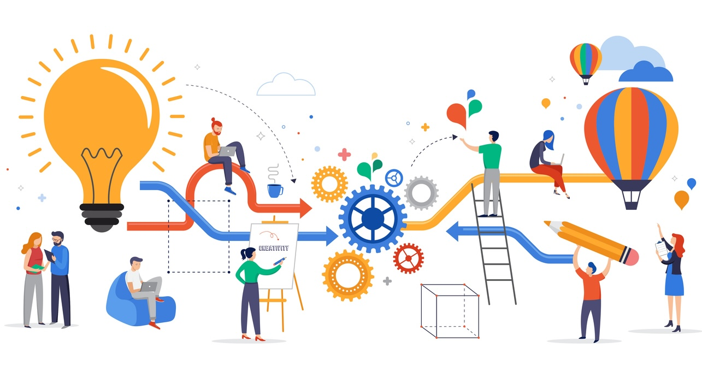

Image by ma_rish from iStock
Grounded Product Management
Željko Obrenović's vision of how product management should work — durable operating principles for vision-led, outcome-driven product work, each grounded in a concrete working checklist. Informed by practice, by Ben Foster and Rajesh Nerlikar's "Build What Matters", by Marty Cagan's "EMPOWERED", and by John Cutler's "The Beautiful Mess".
No posts match your search.